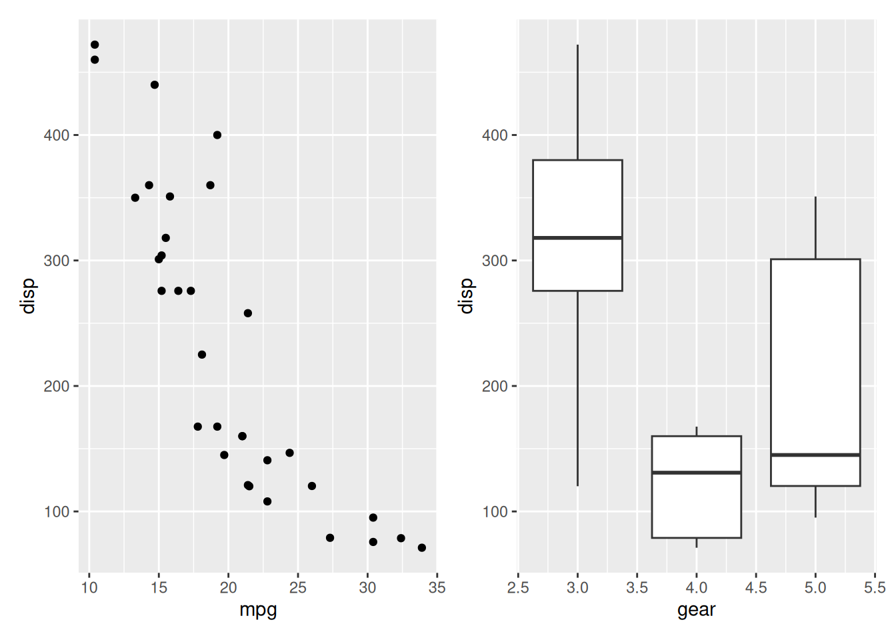

Module 14 Data visualization using ggplot
This module considers visualization of your data using the ggplot2 package which is a part of tidyverse. R has several systems for making plots, but ggplot2 is one of the most elegant and most versatile. Using ggplot2 you can make plots faster by learning one system and applying it in many different plot types.
A template project for this module is given on Posit Cloud (open it and use it while reading the notes).
Learning path diagram
14.1 Learning outcomes
By the end of this module, you are expected to:
- Know how to create basic plots using ggplot.
- Formulate the ideas behind the grammar of graphics.
- Explain the idea behind aesthetics such as color, fill, and line type.
- Add geometries to a plot such as a histogram, a boxplot, a barplot, a scatter plot, and a line.
- Understand how themes can be used to modify the overall look of a plot.
- Combine multiple plots into a single graphic.
- Save plots as variables and different image files.
The learning outcomes relate to the overall learning goals number 7, 11-14 and 18 of the course.
14.2 Introduction to data visualization
The package ggplot2 is a plotting package that makes it simple to create complex plots from data in a data frame. It provides an interface for specifying which variables to plot, how they are displayed, and general visual properties. Hence, only minimal changes are needed, if the underlying data change or if we decide to change from a bar plot to a scatterplot.
The package implements the grammar of graphics, a coherent system for describing and building layered plots. A plot is built step by step by adding new layers. Adding layers in this fashion allows for extensive flexibility and customization of plots.
An excellent introduction to data visualization using ggplot2 is given in the interactive DataCamp course Introduction to data visualization with ggplot2. Please complete the course before continuing.
Note that there is a difference between using the pipe |> operator which passes the output of the previous line of code as the first input of the next line of code and the + operator used between ggplot2 functions for “layering”. That is, you create the plot in layers, separated by +.
14.3 Combining plots into one using patchwork
You can combine separate ggplots into the same graphic using the patchwork package. You can install patchwork from CRAN using install.packages('patchwork').
The usage is simple. Plots in two rows:
library(ggplot2)
library(patchwork)
p1 <- ggplot(mtcars) + geom_point(aes(mpg, disp))
p2 <- ggplot(mtcars) + geom_boxplot(aes(gear, disp, group = gear))
p1 + p2
The package provides rich support for arbitrarily complex layouts. Code for nesting three plots on top of a third:
p3 <- ggplot(mtcars) + geom_smooth(aes(disp, qsec))
p4 <- ggplot(mtcars) + geom_bar(aes(carb))
(p1 | p2 | p3) /
p4
For further examples see the documentation pages.
14.4 Saving graphics
In general, when you do analytics using R Markdown, there is no need to save your graphics. This is done automatically. However, in a few cases you may need to save you graphics in different formats. Let us consider a simple plot:
library(tidyverse)
p <- ggplot(mpg, aes(displ, hwy, colour = class)) +
geom_point()
p # print it out
To save the plot as a bitmap image (png, jpeg etc) have a look at the documentation (?png). Let us try to save the plot as a png file.
png("test1.png") # open png device for writing
p
dev.off() # close device
#> png
#> 2
png("test2.png", width = 1200, height = 600) # use other output width and height in px
p
dev.off()
#> png
#> 2
png("test3.png", width = 1200, height = 900) # save a patchwork plot
(p1 | p2 | p3) /
p4
#> `geom_smooth()` using method = 'loess' and formula = 'y ~ x'
dev.off()
#> png
#> 2
# browseURL("test1.png") # to have a look at the file
# browseURL("test3.png") # to have a look at the fileTo save the plot as a pdf use
pdf("test1.pdf") # open pdf device for writing
p
dev.off() # close device
#> png
#> 2
# browseURL("test1.pdf") # to have a look at the fileIf you use LaTeX you may use the tikzDevice package to save plots as TikZ.
14.5 Recap
- The tidyverse package ggplot2 is an R package for producing data visualizations. It is based on the Grammar of Graphics by Wilkinson (2005).
- The grammar of graphics is a coherent system for describing and building layered plots.
- Graphics are made by grammatical elements such as data, aesthetics, geometries, scales, facets, and themes.
- Plots are made though aesthetic mappings. That is, variables are mapped to x or y position using aesthetics attributes such as color, shape, or size.
- A plot is built step by step by adding new layers. Adding layers in this fashion allows for extensive flexibility and customization of plots.
- Together, the data, aesthetic mappings, and geometric object form a layer.
- A plot may have multiple layers, for example, when we overlay a scatterplot with a smoothed line.
- Aesthetics are add in
ggplotusing theaesfunction or alternatively ingeom_functions. - Geometries (e.g. a boxplot or line) are added to a plot using the
geom_functions. - Themes can be applied to the plot using the
theme_functions and control all the non-data ink used to modify the overall look of a plot. - Separate ggplots can be combined into the same graphic using the patchwork package.
- Save plots as variables and different image files using the device functions such as
pngandpdf. - The pipe
|>operator is used to “pipe” the output of the previous line of code as the first input of the next line of code. - The
+operator in ggplot2 functions is used for “layering”. This means you create the plot in layers, separated by+. - The ‘Data visualization with ggplot2’ cheatsheet is very useful. Find the newest version in RStudio Help > Cheatsheets.
- A good place to see examples are on the main reference page. Follow the link to the function of interest and have a look at the examples.
14.6 Exercises
Below you will find a set of exercises. Always have a look at the exercises before you meet in your study group and try to solve them yourself. Are you stuck, see the help page. Some of the solutions to each exercise can be seen by pressing the button at each question. Beware, you will not learn by giving up too early. Put some effort into finding a solution! Always practice using shortcuts in RStudio (see Tools > Keyboard Shortcuts Help).
Go to the Tools for Analytics workspace and download/export the TM14 project. Open it on your laptop and have a look at the files in the exercises folder which can be used as a starting point.
14.6.1 Exercise (gapminder)
Use the exercise R Markdown template to solve this exercise (File > New File > R Markdown…, select From template and then TFA Exercise).
In this exercise, we will demonstrate how relatively simple ggplot2 code can create insightful and aesthetically pleasing plots. As motivation we will create plots that help us better understand trends in world health and economics.
Hans Rosling was the co-founder of the Gapminder Foundation, an organization dedicated to educating the public by using data to dispel common myths about the so-called developing world. Hans Rosling conveyed actual data-based trends in a dramatic way of his own, using effective data visualization. Here we will try to answer two questions:
- Is it a fair characterization of today’s world to say it is divided into Western rich nations and the developing world in Africa, Asia, and Latin America?
- Has income inequality across countries worsened during the last 40 years?
To answer these questions, we will be using the gapminder dataset provided in the dslabs package. This dataset was created using a number of spreadsheets available from the Gapminder Foundation. You can access the table like this:
library(tidyverse)
library(dslabs)
data(gapminder)
gapminder |> as_tibble()
#> # A tibble: 10,545 × 9
#> country year infant_mortality life_expectancy fertility population gdp continent region
#> <fct> <int> <dbl> <dbl> <dbl> <dbl> <dbl> <fct> <fct>
#> 1 Albania 1960 115. 62.9 6.19 1636054 NA Europe South…
#> 2 Algeria 1960 148. 47.5 7.65 11124892 1.38e10 Africa North…
#> 3 Angola 1960 208 36.0 7.32 5270844 NA Africa Middl…
#> 4 Antigua an… 1960 NA 63.0 4.43 54681 NA Americas Carib…
#> 5 Argentina 1960 59.9 65.4 3.11 20619075 1.08e11 Americas South…
#> 6 Armenia 1960 NA 66.9 4.55 1867396 NA Asia Weste…
#> 7 Aruba 1960 NA 65.7 4.82 54208 NA Americas Carib…
#> 8 Australia 1960 20.3 70.9 3.45 10292328 9.67e10 Oceania Austr…
#> 9 Austria 1960 37.3 68.8 2.7 7065525 5.24e10 Europe Weste…
#> 10 Azerbaijan 1960 NA 61.3 5.57 3897889 NA Asia Weste…
#> # ℹ 10,535 more rowsWe start by testing our knowledge regarding differences in child mortality across different countries. For each of the six pairs of countries below, which country do you think had the highest child mortality rates in 2015? Which pairs do you think are most similar?
- Sri Lanka or Turkey
- Poland or South Korea
- Malaysia or Russia
- Pakistan or Vietnam
- Thailand or South Africa
When answering these questions without data, the non-European countries are typically picked as having higher child mortality rates: Sri Lanka over Turkey, South Korea over Poland, and Malaysia over Russia. It is also common to assume that countries considered to be part of the developing world: Pakistan, Vietnam, Thailand, and South Africa, have similarly high mortality rates.
To answer these questions with data, we can use dplyr. For example, for the first comparison we see that:
gapminder |>
filter(year == 2015 & country %in% c("Sri Lanka","Turkey")) |>
select(country, infant_mortality)
#> country infant_mortality
#> 1 Sri Lanka 8.4
#> 2 Turkey 11.6Turkey has the higher infant mortality rate.
We can use this code on all comparisons and find the following:
#> New names:
#> • `country` -> `country...1`
#> • `infant_mortality` -> `infant_mortality...2`
#> • `country` -> `country...3`
#> • `infant_mortality` -> `infant_mortality...4`| country | infant mortality | country | infant mortality |
|---|---|---|---|
| Sri Lanka | 8.4 | Turkey | 11.6 |
| Poland | 4.5 | South Korea | 2.9 |
| Malaysia | 6.0 | Russia | 8.2 |
| Pakistan | 65.8 | Vietnam | 17.3 |
| Thailand | 10.5 | South Africa | 33.6 |
We see that the European countries on this list have higher child mortality rates: Poland has a higher rate than South Korea, and Russia has a higher rate than Malaysia. We also see that Pakistan has a much higher rate than Vietnam, and South Africa has a much higher rate than Thailand. It turns out that when Hans Rosling gave this quiz to educated groups of people, the average score was less than 2.5 out of 5, worse than what they would have obtained had they guessed randomly. This implies that we are misinformed. We will try to use visualization to help us being more informed.
The west vs. the developing world
There is a preconceived notion that the world is divided into two groups: the Western world (Western Europe and North America), characterized by long life spans and small families, versus the developing world (Africa, Asia, and Latin America) characterized by short life spans and large families. But do the data support this dichotomous view?
- Make a scatterplot of life expectancy versus fertility rates (average number of children per woman) in 1962. Use continent as color aesthetic.
Solution
filter(gapminder, year %in% c(1962, 2012)) |>
ggplot(aes(fertility, life_expectancy, col = continent)) +
geom_point() +
facet_grid(cols = vars(year))
This plot clearly shows that the majority of countries have moved from the developing world cluster to the western world one. In 2012, the western versus developing world view no longer makes sense. This is particularly clear when comparing Europe to Asia, the latter of which includes several countries that have made great improvements.
- In 1962, “the West versus developing world” view was grounded in some reality. Is this still the case 50 years later? We could easily plot the 2012 data in the same way we did for 1962. To make comparisons, side by side plots are preferable. In ggplot2, we can achieve this by faceting variables and making a plot for each year. That is, you must filter by years 1962 and 2012 and add the layer
facet_grid, which automatically separates the plots.
- To explore the transformation through the years, make a plot for the years 1962, 1970, 1980, 1990, 2000, and 2012 considering Europe and Asia. How has Asia transformed through the years compared to Europe? Since we consider many years, we will not want all the plots on the same row. Instead, we will want to use multiple rows and columns. The function
facet_wrappermits us to do this by automatically wrapping the series of plots.
Infobox - Scales
The default choice of the range of the axes is important. When not using facet, this range is determined by the data shown in the plot. When using facet, this range is determined by the data shown in all plots and therefore kept fixed across plots. This makes comparisons across plots much easier. For example, in the above plot, we can see that life expectancy has increased and the fertility has decreased across most countries. We see this because the cloud of points moves. This is not the case if we adjust the scales:

In the plot above, we have to pay special attention to the range to notice that the plot on the right has a larger life expectancy.

- Illustrate the transformation for Asia using a single plot where year is used as color aesthetic.
Time series plots
The visualizations above effectively illustrate that data no longer supports the Western versus developing world view. Once we see these plots, new questions emerge. For example, which countries are improving more and which ones less? Was the improvement constant during the last 50 years or was it more accelerated during certain periods? For a closer look that may help answer these questions, we introduce time series plots.
Time series plots have time in the x-axis and an outcome or measurement of interest on the y-axis. For example, here is a trend plot of United States fertility rates:

We see that the trend is not linear at all. Instead there is sharp drop during the 1960s and 1970s to below 2. Then the trend comes back to 2 and stabilizes during the 1990s.
When the points are regularly and densely spaced, as they are here, we create curves by joining the points with lines, to convey that these data are from a single series, here a country. To do this, we use the geom_line function instead of geom_point.

- Make a lineplot showing the time series of fertility versus year for United States.
- Lineplots is particularly helpful when we look at more countries. Make a lineplot showing the time series of fertility versus year for South Korea and Germany. Use country as color aesthetic.
Solution
gapminder |>
filter(country %in% countries) |>
ggplot(aes(year, life_expectancy, col = country)) +
geom_line() 
The plot clearly shows how an improvement in life expectancy followed the drops in fertility rates. In 1960, Germans lived 15 years longer than South Koreans, although by 2010 the gap is completely closed. It exemplifies the improvement that many non-western countries have achieved in the last 40 years.
- Make a lineplot showing the time series of life expectancy versus year for South Korea and Germany. Use country as color aesthetic.
Data transformations
We now shift our attention to the second question related to the commonly held notion that wealth distribution across the world has become worse during the last decades. When general audiences are asked if poor countries have become poorer and rich countries become richer, the majority answers yes. By using stratification, histograms, smooth densities, and boxplots, we will be able to understand if this is in fact the case. First we learn how transformations can sometimes help provide more informative summaries and plots.
The gapminder data table includes a column with the countries’ gross domestic product (GDP). GDP measures the market value of goods and services produced by a country in a year. The GDP per person is often used as a rough summary of a country’s wealth. Here we divide this quantity by 365 to obtain the more interpretable measure dollars per day. Using current U.S. dollars as a unit, a person surviving on an income of less than $2 a day, is defined to be living in absolute poverty. We add this variable to the data table:
The GDP values are adjusted for inflation and represent current U.S. dollar, so these values are meant to be comparable across the years. Of course, these are country averages and within each country there is much variability. All the graphs and insights described below relate to country averages and not to individuals.
Here is a histogram of per day incomes from 1970:
past_year <- 1970
gapminder |>
filter(year == past_year & !is.na(gdp)) |>
ggplot(aes(dollars_per_day)) +
geom_histogram(binwidth = 1, color = "black")
We use the color = "black" argument to draw a boundary and clearly distinguish the bins.
In this plot, we see that for the majority of countries, averages are below $10 a day. However, the majority of the x-axis is dedicated to the 35 countries with averages above $10. So the plot is not very informative about countries with values below $10 a day.
It might be more informative to quickly be able to see how many countries have average daily incomes of about $1 (extremely poor), $2 (very poor), $4 (poor), $8 (middle), $16 (well off), $32 (rich), $64 (very rich) per day. These changes are multiplicative and log transformations convert multiplicative changes into additive ones: when using base 2, a doubling of a value turns into an increase by 1.
- Make a histogram of
log2(dollars_per_day)from 1970.
Infobox - Which base?
In the case above, we used base 2 in the log transformations. Other common choices are base \(\mathrm{e}\) (the natural log) and base 10.
In general, we do not recommend using the natural log for data exploration and visualization. This is because while \(2^2, 2^3, 2^4, \dots\) or \(10^2, 10^3, \dots\) are easy to compute in our heads, the same is not true for \(\mathrm{e}^2, \mathrm{e}^3, \dots\), so the scale is not intuitive or easy to interpret.
In the dollars per day example, we used base 2 instead of base 10 because the resulting range is easier to interpret. The range of the values being plotted is 0.327, 48.885.
In base 10, this turns into a range that includes very few integers: just 0 and 1. With base two, our range includes -2, -1, 0, 1, 2, 3, 4, and 5. It is easier to compute \(2^x\) and \(10^x\) when \(x\) is an integer and between -10 and 10, so we prefer to have smaller integers in the scale. Another consequence of a limited range is that choosing the binwidth is more challenging. With log base 2, we know that a binwidth of 1 will translate to a bin with range \(x\) to \(2x\).
For an example in which base 10 makes more sense, consider population sizes. A log base 10 is preferable since the range for these is:
filter(gapminder, year == past_year) |>
summarize(min = min(population), max = max(population))
#> min max
#> 1 46075 8.09e+08Here is the histogram of the transformed values:
gapminder |>
filter(year == past_year) |>
ggplot(aes(log10(population))) +
geom_histogram(binwidth = 0.5, color = "black")
In the above, we quickly see that country populations range between ten thousand and ten billion.
There are two ways we can use log transformations in plots. We can log the values before plotting them or use log scales on the axes. Both approaches are useful and have different strengths. If we log the data, we can more easily interpret intermediate values in the scale. For example, if we see:
----1----x----2--------3----
for log transformed data, we know that the value of \(x\) is about 1.5. If the scales are logged:
----1----x----10------100---
then, to determine x, we need to compute \(10^{1.5}\), which is not easy to do in our heads. The advantage of using logged scales is that we see the original values on the axes. However, the advantage of showing logged scales is that the original values are displayed in the plot, which are easier to interpret. For example, we would see “32 dollars a day” instead of “5 log base 2 dollars a day”.

- Make a histogram of
dollars_per_dayfrom 1970 using a log2 scale on the x-axis. Compare it to the plot from Question 8. Hint: you can use thescale_x_continuousfunction withtrans = "log2".
The histograms in Questions 8 and 9 have two bumps: one at about 4 and another at about 32. In statistics these bumps are sometimes referred to as modes. The mode of a distribution is the value with the highest frequency. The mode of the normal distribution is the average. When a distribution, like the one above, does not monotonically decrease from the mode, we call the locations where it goes up and down again local modes and say that the distribution has multiple modes indicating different distributions for different groups.
The histogram above suggests that the 1970 country income distribution has two modes: one at about 2 dollars per day (1 in the log 2 scale) and another at about 32 dollars per day (5 in the log 2 scale). However, the histogram does not show us if the two groups of countries are west versus the rest. Let us create the group column:
gapminder <- gapminder |>
mutate(group = case_when(
region %in% c("Western Europe", "Northern Europe","Southern Europe",
"Northern America", "Australia and New Zealand") ~ "West",
TRUE ~ "Rest")) |>
as_tibble()
- Make a histogram of
dollars_per_dayfrom 1970 using a log2 scale and facet it by group. Is there a west versus the rest dichotomy?
The exploratory data analysis above has revealed two characteristics about average income distribution in 1970. Using a histogram, we found a bimodal distribution with the modes relating to poor and rich countries. We will try to visualize these summaries in one plot.

- Make a boxplot (
geom_boxplot) ofdollars_per_day(y-axis) versusgroup(x-axis) from 1970 using a log2 scale. Also add a the data usinggeom_point().
Data exploration clearly shows that in 1970 there was a “west versus the rest” dichotomy. But does this dichotomy persist? We first have to be a little careful here since there are more countries represented in 2010 than in 1970: the total counts are larger. One reason for this is that several countries were founded after 1970. For example, the Soviet Union divided into several countries during the 1990s. Another reason is that data was available for more countries in 2010. Hence we only have to consider the countries with data available for both years:
past_year <- 1970
present_year <- 2010
years <- c(past_year, present_year)
country_list_1 <- gapminder |>
filter(year == past_year & !is.na(dollars_per_day)) |>
pull(country)
country_list_2 <- gapminder |>
filter(year == present_year & !is.na(dollars_per_day)) |>
pull(country)
country_list <- intersect(country_list_1, country_list_2)We can now filter the rows by years and country_list.
- Make a histogram of
dollars_per_dayfrom 1970 and 2010 using a log2 scale and facet it by group and year. Does the dichotomy persist?
Make a boxplot of
dollars_per_dayversusgroupfrom 1970 and 2010 using a log2 scale. Use year as fill aesthetic.Hint: you must convert year to a factor using
mutate(year = factor(year)).
The previous data exploration suggested that the income gap between rich and poor countries has narrowed considerably during the last 40 years. We used a series of histograms and boxplots to see this. Let us now shift to density plots. Let us start by noting that density plots for income distribution in 1970 and 2010 deliver the message that the gap is closing:
gapminder |>
filter(year %in% years & country %in% country_list) |>
ggplot(aes(dollars_per_day)) +
geom_density(fill = "grey") +
scale_x_continuous(trans = "log2") +
facet_grid(cols = vars(year))
In the 1970 plot, we see two clear modes: poor and rich countries. In 2010, it appears that some of the poor countries have shifted towards the right, closing the gap.
The next message we need to convey is that the reason for this change in distribution is that several poor countries became richer, rather than some rich countries becoming poorer. To do this, we can assign a color to the groups we identified during data exploration.
gapminder |>
filter(year %in% years & country %in% country_list) |>
ggplot(aes(dollars_per_day, fill = group)) +
scale_x_continuous(trans = "log2") +
geom_density(alpha = 0.2) +
facet_grid(cols = vars(year))
Note the default is to have the area represented by each distribution add up to 1, regardless of the size of each group: the number of countries in the ‘west’ group is 21 and in the ‘rest’ group is 87. We may use count on the y-axis instead:
p <- gapminder |>
filter(year %in% years & country %in% country_list) |>
ggplot(aes(dollars_per_day, y = ..count.., fill = group)) +
scale_x_continuous(trans = "log2", limit = c(0.125, 300)) +
facet_grid(cols = vars(year))
p + geom_density(alpha = 0.2)
#> Warning: The dot-dot notation (`..count..`) was deprecated in ggplot2 3.4.0.
#> ℹ Please use `after_stat(count)` instead.
#> This warning is displayed once every 8 hours.
#> Call `lifecycle::last_lifecycle_warnings()` to see where this warning was generated.
- To get densities smoother, use
bw = 0.75argument so that the same bandwidth is used in each density. Comment on the plot.
As a final point, we note that in these distributions the weight of every country is the same. So if most of the population is improving, but living in a very large country, such as China, we might not appreciate this. We can actually weight the smooth densities using the weight mapping argument. We modify the dataset:
gapminder <- gapminder |>
filter(year %in% years & country %in% country_list) |>
group_by(year) |>
mutate(weight = population/sum(population)*2) |>
ungroup() - Modify the ggplot function with a weight argument and plot the density (with area equal 1).
14.6.2 Exercise (profit)
Use the exercise R Markdown template to solve this exercise (File > New File > R Markdown…, select From template and then TFA Exercise).
Consider the dataset profit (provided by the tfa package) containing quarterly financial records for each costumer, product, etc.:
# remotes::install_github("bss-osca/tfa-package", upgrade = FALSE) # upgrade first
library(tfa)
library(skimr)
glimpse(profit)
#> Rows: 24,546
#> Columns: 9
#> $ Quarter <dbl> 3, 1, 4, 1, 4, 3, 4, 3, 4, 1, 1, 3, 3, 3, 2, 2, 1, 2, 3, 2, 2, 2, …
#> $ Channel <chr> "ATM", "ATM", "ATM", "ATM", "ATM", "BRH", "BRH", "ATM", "BRH", "BR…
#> $ `Customer ID` <chr> "FRT", "MRT", "PBI", "PBI", "MRT", "MAM", "PBI", "FRT", "PBI", "PB…
#> $ Country <chr> "USA", "USA", "USA", "USA", "USA", "USA", "USA", "USA", "USA", "US…
#> $ `Product Line` <chr> "Credit Products", "Credit Products", "Deposit Products", "Deposit…
#> $ Revenue <dbl> 6044, 4686, 6063, 4682, 6320, 2993, 3355, 5716, 3347, 2624, 3629, …
#> $ `Product Cost` <dbl> 3998, 3229, 7440, 6127, 7913, 1034, 4355, 5617, 4229, 1960, 4650, …
#> $ `Customer Service Cost` <dbl> 413, 643, 1842, 1118, 1854, 242, 1027, 876, 425, 264, 700, 1482, 4…
#> $ Profit <dbl> 1633, 815, -3219, -2563, -3447, 1718, -2027, -777, -1307, 401, -17…
skim(profit)| Name | profit |
| Number of rows | 24546 |
| Number of columns | 9 |
| _______________________ | |
| Column type frequency: | |
| character | 4 |
| numeric | 5 |
| ________________________ | |
| Group variables | None |
Variable type: character
| skim_variable | n_missing | complete_rate | min | max | empty | n_unique | whitespace |
|---|---|---|---|---|---|---|---|
| Channel | 0 | 1 | 3 | 3 | 0 | 10 | 0 |
| Customer ID | 0 | 1 | 3 | 3 | 0 | 18 | 0 |
| Country | 0 | 1 | 3 | 14 | 0 | 47 | 0 |
| Product Line | 0 | 1 | 14 | 25 | 0 | 6 | 0 |
Variable type: numeric
| skim_variable | n_missing | complete_rate | mean | sd | p0 | p25 | p50 | p75 | p100 | hist |
|---|---|---|---|---|---|---|---|---|---|---|
| Quarter | 0 | 1 | 2.50 | 1.12 | 1 | 2 | 2 | 3 | 4 | ▇▇▁▇▇ |
| Revenue | 0 | 1 | 120.22 | 420.96 | 1 | 12 | 41 | 74 | 7540 | ▇▁▁▁▁ |
| Product Cost | 0 | 1 | 100.07 | 375.51 | 0 | 9 | 29 | 68 | 9256 | ▇▁▁▁▁ |
| Customer Service Cost | 0 | 1 | 17.42 | 67.43 | 0 | 1 | 5 | 12 | 1865 | ▇▁▁▁▁ |
| Profit | 0 | 1 | 2.71 | 154.89 | -4139 | -7 | 0 | 9 | 3664 | ▁▁▇▁▁ |
- Make a barplot that shows the total profitability of the product lines. Use the following steps:
a) Convert all character columns to factor columns.

b) Group by product line, calculate the total profit and plot profit for each product line.
Solution
profit |>
group_by(`Product Line`) |>
summarise(Profit = sum(Profit)) |>
ggplot(aes(x = reorder(`Product Line`, Profit), y = Profit)) +
geom_col()
# Alternatively you can reorder the data frame before calling ggplot
profit |>
group_by(`Product Line`) |>
summarise(Profit = sum(Profit)) |>
arrange(Profit) |>
mutate(`Product Line` = factor(`Product Line`, levels = `Product Line`, ordered = TRUE)) |>
ggplot(aes(x = reorder(`Product Line`, Profit), y = Profit)) +
geom_col() +
labs(title = "Total profit for each product line") 
c) Plot profit for each product line where product line is reordered based on total profit.

d) Add a title to the plot using labs.
e) Rotate the x-axis labels 90 degrees.
f) Which product line is best and worst?
Solution
profit |>
group_by(`Product Line`, Quarter) |>
summarise(Profit = sum(Profit)) |>
ggplot(aes(x = reorder(`Product Line`, Profit), y = Profit)) +
geom_col() +
facet_grid(cols = vars(Quarter)) +
labs(title = "Total profit for each product line") +
xlab("Product Line") +
theme(axis.text.x = element_text(angle = 90, vjust = 0.5, hjust=1))
Some product lines have quite different earnings in different quarters.
- Make a barplot that shows the total profitability of the product lines in each quarter. Are there details we have missed in Question 1?
- Make a boxplot of profitability of the product lines. Any insight?
Solution
profit |>
group_by(`Customer ID`) |>
summarise(Profit = sum(Profit)) |>
ggplot(aes(x = reorder(`Customer ID`, Profit), y = Profit)) +
geom_col() +
labs(title = "Total profit for each customer") +
theme(axis.text.x = element_text(angle = 90, vjust = 0.5, hjust=1))
Lowest and highest total profit is for PBI and WEM, respectively.
- Make a barplot that shows the total profitability of the customers. Which customer is best and worst?
Solution
profit |>
group_by(`Customer ID`) |>
summarise(Profit = mean(Profit)) |>
ggplot(aes(x = reorder(`Customer ID`, Profit), y = Profit)) +
geom_col() +
labs(title = "Mean profit for each customer") +
theme(axis.text.x = element_text(angle = 90, vjust = 0.5, hjust=1))
Since the number of transactions are not the same, the order of customers will not be the same.
- Make a barplot that shows the mean profitability of the customers. Which customer is best and worst? Compare against Question 4 and discuss.
- Make a plot illustrating number of transactions for each customer. Use total profit as fill atheistic.
- Make a boxplot illustrating the profit for each customer.
14.6.3 Exercise (COVID-19)
Use the exercise R Markdown template to solve this exercise (File > New File > R Markdown…, select From template and then TFA Exercise).
Countries around the world are responding to an outbreak of respiratory illness caused by a novel corona virus, COVID-19. The outbreak first started in Wuhan, China, but cases have been identified in a growing number of other locations internationally, including the United States. In this report we explore how the trajectory of the cumulative deaths in a number of countries.
The data come from the coronavirus package, which pulls data from the Johns Hopkins University Center for Systems Science and Engineering (JHU CCSE) Corona virus repository. The corona virus package provides a tidy format dataset of the 2019 Novel Corona virus COVID-19 (2019-nCoV) epidemic. The package is available on GitHub here and is updated daily.
First load the following packages:
The data frame called coronavirus in the coronavirus package provides a daily summary of the Corona virus (COVID-19) cases by country. Each row in the data frame represents a country (or, where relevant, state/province). Note that the data provided in this package provides daily number of deaths, confirmed cases, and recovered cases. Since we just need the dataset we load it using read_csv:
coronavirus <- read_csv(
"https://raw.githubusercontent.com/RamiKrispin/coronavirus/master/csv/coronavirus.csv",
col_types = cols(
date = col_date(format = ""),
province = col_character(),
country = col_character(),
lat = col_double(),
long = col_double(),
type = col_character(),
cases = col_double()
)
)We calculate the total number of cases per day, cumulative numbers and days since first record:
dat <- coronavirus |>
group_by(country, date, type) |>
summarise(tot_cases = sum(cases)) |>
group_by(country, type) |>
arrange(date) |>
mutate(cumulative_cases = cumsum(tot_cases)) |>
ungroup() |>
mutate(
days_elapsed = as.numeric(date - min(date)),
year = year(date)
) |> print()
#> # A tibble: 650,637 × 7
#> country date type tot_cases cumulative_cases days_elapsed year
#> <chr> <date> <chr> <dbl> <dbl> <dbl> <dbl>
#> 1 Afghanistan 2020-01-22 confirmed 0 0 0 2020
#> 2 Afghanistan 2020-01-22 death 0 0 0 2020
#> 3 Afghanistan 2020-01-22 recovery 0 0 0 2020
#> 4 Albania 2020-01-22 confirmed 0 0 0 2020
#> 5 Albania 2020-01-22 death 0 0 0 2020
#> 6 Albania 2020-01-22 recovery 0 0 0 2020
#> 7 Algeria 2020-01-22 confirmed 0 0 0 2020
#> 8 Algeria 2020-01-22 death 0 0 0 2020
#> 9 Algeria 2020-01-22 recovery 0 0 0 2020
#> 10 Andorra 2020-01-22 confirmed 0 0 0 2020
#> # ℹ 650,627 more rowsSolution
dat |>
group_by(date, type) |>
summarise(tot_cases = sum(tot_cases)) |> print() |>
ggplot(aes(x = date, y = tot_cases)) +
geom_col() +
facet_grid(rows = vars(type), scales = "free") +
labs(
title = "Number of Covid 19 cases per day",
y = "cases"
)
#> # A tibble: 3,237 × 3
#> # Groups: date [1,079]
#> date type tot_cases
#> <date> <chr> <dbl>
#> 1 2020-01-22 confirmed 557
#> 2 2020-01-22 death 17
#> 3 2020-01-22 recovery 30
#> 4 2020-01-23 confirmed 100
#> 5 2020-01-23 death 1
#> 6 2020-01-23 recovery 2
#> 7 2020-01-24 confirmed 287
#> 8 2020-01-24 death 8
#> 9 2020-01-24 recovery 7
#> 10 2020-01-25 confirmed 493
#> # ℹ 3,227 more rows
- Calculate and plot the number of confirmed, death and recovered cases per day given date using
facet_gridandgeom_col.
Consider the following set of countries:
- Plot a lineplot of the cumulative number of deaths as a function of days elapsed for the selected countries. Use country as color aesthetic.
Since the countries have different population sizes, we would like to calculate some numbers relative to the population size. First we need population sizes for each country. They are given in the dataset world_pop in the tfa package:
world_pop <- tfa::world_pop |>
filter(country %in% countries) |>
print()
#> # A tibble: 1,505 × 3
#> country year pop
#> <chr> <dbl> <dbl>
#> 1 China 1800 321675013
#> 2 China 1801 324408862
#> 3 China 1802 327165946
#> 4 China 1803 329946461
#> 5 China 1804 332750607
#> 6 China 1805 335578586
#> 7 China 1806 338430598
#> 8 China 1807 341306850
#> 9 China 1808 344207546
#> 10 China 1809 347132894
#> # ℹ 1,495 more rowsWe can join the datasets using:
dat <- dat |>
filter(country %in% countries) |>
left_join(world_pop) |>
print()
#> Joining with `by = join_by(country, year)`
#> # A tibble: 16,185 × 8
#> country date type tot_cases cumulative_cases days_elapsed year pop
#> <chr> <date> <chr> <dbl> <dbl> <dbl> <dbl> <dbl>
#> 1 China 2020-01-22 confirmed 548 548 0 2020 1424548266
#> 2 China 2020-01-22 death 17 17 0 2020 1424548266
#> 3 China 2020-01-22 recovery 28 28 0 2020 1424548266
#> 4 Denmark 2020-01-22 confirmed 0 0 0 2020 5796800
#> 5 Denmark 2020-01-22 death 0 0 0 2020 5796800
#> 6 Denmark 2020-01-22 recovery 0 0 0 2020 5796800
#> 7 France 2020-01-22 confirmed 0 0 0 2020 65721165
#> 8 France 2020-01-22 death 0 0 0 2020 65721165
#> 9 France 2020-01-22 recovery 0 0 0 2020 65721165
#> 10 Italy 2020-01-22 confirmed 0 0 0 2020 59132073
#> # ℹ 16,175 more rows
any(is.na(dat)) # check if any missing values
#> [1] FALSE- Calculate
tot_cases_popas number of cases per 100000 inhabitants. That is, total cases divided by population and multiplied by 100000.

- Plot the number of confirmed cases per 100000 inhabitants for the last 21 days. Use country as fill aesthetic.

- Plot the number of confirmed cases per 100000 inhabitants in Denmark for the last 14 days.
14.6.4 Exercise (Lego and sales)
Use the exercise R Markdown template to solve this exercise (File > New File > R Markdown…, select From template and then TFA Exercise).
Consider (simulated) data of Lego sales in 2018 for a sample of customers who bought Legos in the U.S. The dataset is called lego_sales. You can find descriptions of each of the variables in the help file for the dataset, which you can access by running ?lego_sales in your Console.
You need the tidyverse package as usual and the dsbox package for the data.
library(tidyverse)
library(dsbox) # install using devtools::install_github("rstudio-education/dsbox")Answer the following questions using a table with numbers and try to visualize it. For each question, state your answer in a sentence, e.g. “The first three common names of purchasers are …”.
What are the three most common first names of purchasers?
What are the three most common themes of Lego sets purchased?
Among the most common theme of Lego sets purchased, what is the most common subtheme?
- Create a new variable called
age_groupand group the ages into the following categories: “18 and under”, “19 - 25”, “26 - 35”, “36 - 50”, “51 and over”.
- Which age group has purchased the highest number of Lego sets.
Which age group has spent the most money on Legos?
Come up with a question you want to answer using these data, and write it down. Then, create a data visualization that answers the question, and explain how your visualization answers the question.
14.6.5 Exercise (company ranking)
This exercise is a slightly modified version an exam assignment (exam 2021-A3).
Use the exercise R markdown template to solve this exercise (File > New File > R Markdown…, select From template and then TFA Exercise).
The dataset companies, in the tfa package, lists approx. 1000 of the world’s biggest companies, measured by sales, profits, assets and market value. The column/variables are:
name: the name of the company.country: the country the company is situated in.category: the products the company produces.sales: the amount of sales of the company in billion USD.profits: the profit of the company in billion USD.assets: the assets of the company in billion USD.marketvalue: the market value of the company in billion USD.
You can load the dataset using:
# remotes::install_github("bss-osca/tfa-package", build = FALSE) # run if tfa not installed
library(tidyverse)
companies <- read_csv(system.file("extdata/companies.csv", package = "tfa"))Answer this assignment using the ggplot2 package in tidyverse (you might need dplyr for preparing the datasets you want to plot).
Create a visualization showing the number of companies for each product category with the following features:
- Number of companies is represented using bars and sorted increasingly or decreasingly.
- Informative figure title and axis titles are given.
- The labels on the x-axis are rotated 90 degrees.
What product category has the lowest number of companies?
Consider product categories
Drugs & biotechnologyandMedia. Create a visualization showing the profit given sales of each company with the following features:- Different colors are used for each product category.
- Informative figure title and axis titles are given.
- A trend line for each category is added using
geom_smooth.
Based on the trend lines which product category gives the best profit?
Consider product categories
BankingandAerospace & defense. Letratiodenote a variable/column that equals profit divided by sales. Create a visualization showing the variation inratiowith the following features:- Different colors are used for each product category.
- Informative figure title and axis titles are given.
Based on the visualization comment on the variation and median. Which product category gives the highest ratio?
The
continentsdataset matches countries to continents and contains two columns:country: the country.continent: the corresponding continent.
You can load the dataset using:
Consider product categories
Banking,Aerospace & defense,Telecommunications servicesandSemiconductors. Create a visualization showing assets given market value for each company with the following features (hint: you may need to do a mutating join):- Two continents
AmericasandEuropeare considered. - Different colors are used for each continent.
- A plot is given for each product category (facet).
- Informative figure title and axis titles are given.
- A trend line for each category is added using
geom_smooth(method = lm).
Based on the visualization consider the trend lines for Banking and comment.
14.6.6 Exercise (Titanic)
This exercise is a slightly modified version an exam assignment (reexam 2021-A3).
Use the exercise R markdown template to solve this exercise (File > New File > R Markdown…, select From template and then TFA Exercise).
The dataset titanic, given in the appendix, lists approx. 1300 passengers on Titanic. The column/variables are:
pclass: Passenger class (1 = 1st; 2 = 2nd; 3 = 3rd).survived: Survival (0 = No; 1 = Yes).name: Name.sex: Sex.age: Age.fare: Passenger Fare.cabin: Cabin number.embarked: Port of embarkation (C = Cherbourg; Q = Queenstown; S = Southampton).boat: Lifeboat number.
You can read the dataset file titanic.csv into the dataset dat using
# remotes::install_github("bss-osca/tfa-package", build = FALSE) # run if tfa not installed
library(tidyverse)
dat <- read_csv(system.file("extdata/titanic.csv", package = "tfa"))Answer this assignment using the ggplot2 package in tidyverse (you might need dplyr for preparing the datasets you want to plot).
Solution
dat <- dat |> mutate(harbor = case_when(
embarked == "C" ~ "Cherbourg",
embarked == "Q" ~ "Queenstown",
embarked == "S" ~ "Southampton",
TRUE ~ NA_character_
))
dat |>
ggplot(aes(x = harbor)) +
geom_bar() +
labs(title = "Number of persons embarking each departure harbor",
x = "Harbor",
y = "Persons") 
The main harbor was Southampton.
Create a visualization showing the number of persons embarking the different harbors with the following features:
- Number of persons is represented using bars.
- Informative figure title and axis titles are given.
- The labels on the x-axis are the harbor names (not abbreviations).
What harbor was the main departure harbor?

Create a visualization showing the age distribution of the persons with the following features:
- Number of persons is represented using a histogram.
- Informative figure title and axis titles are given.
Where there most people on board in their twenties or thirties?
Create a visualization showing the fare as a function of age with the following features:
- Different colors are used for each sex.
- Informative figure title and axis titles are given.
- A trend line for each sex is added using
geom_smooth.
Based on the trend lines, do females in general pay more for a ticket?
Create a visualization showing the survival rate for each passenger class with the following features:
- Bars are used for each passenger class.
- All bars have same height (100 %).
- Colors are used to identify who survived and did not survived.
- Informative figure title and axis titles are given.
Is the survival rate different on first and third class?
Let column
leveldenote the the first letter incabin. Create a visualization showing the variance in fare prices with the following features:- Ignore rows with missing
level. - Variation is shown using a boxplot.
- Informative figure title and axis titles are given.
Is the fare price different at the B and C level?
- Ignore rows with missing
14.6.7 Exercise (covid)
This exercise is a slightly modified version an exam assignment (reexam 2022-A3).
Use the exercise R markdown template to solve this exercise (File > New File > R Markdown…, select From template and then TFA Exercise).
Consider COVID-19 data obtained from Our World in Data in the file covid.csv. The dataset contains data from different countries. Some of the columns/variables are:
cases: New confirmed cases of COVID-19.deaths: New deaths attributed to COVID-19.icu_patients: Number of COVID-19 patients in intensive care units (ICUs) on a given day.hosp_patients: Number of COVID-19 patients in hospital on a given day.tests: Total tests for COVID-19.positive_rate: The share of COVID-19 tests that are positive, given as a rolling 7-day average.vac: Total number of people who received at least one vaccine dose.fully_vac: Total number of people who received all doses prescribed by the vaccination protocol.population: Country population.
Other columns are date, country, month and year. You can read the dataset file using
# remotes::install_github("bss-osca/tfa-package", build = FALSE) # run if tfa not installed
library(tidyverse)
dat <- read_csv(system.file("extdata/covid.csv", package = "tfa"))Answer this assignment using the ggplot2 package in tidyverse (you may need dplyr for preparing the datasets you want to plot).
Create a visualization showing the number of cases for each date in Denmark with the following features:
- A blue line is used to visualize the data.
- Informative figure title and axis titles are given.
Is the number of cases low or high in July 2020 in the plot?
Create a visualization showing the total number of deaths per 100000 capita as a function of date with the following features:
- Different colours are used for each country.
- Lines are used to visualize the data.
- Legends are put at the bottom of the plot.
- Informative figure title and axis titles are given.
Hint: you may use the
cumsumfunction to add all deaths up until a given date. You may here considerNAvalues in thedeathscolumn as equal to zero (e.g. usingreplace_na(deaths, 0)).Which country has the highest relative number of deaths in general?
Create a visualization showing the percentage of persons vaccinated as a function of date with the following features:
- We consider 2021.
- Different colours are used to differ between vaccinated and fully vaccinated.
- The plot is divided using
country(facet). - Lines are used to visualize the data.
- Informative figure title and axis titles are given.
Hint: If you calculated the two percentages in two new columns
partlyandfull, then the values can be joined to one column usingWhich country has the highest percentage of vaccinated people and the lowest gap between partly and fully vaccinated?
Solution
dat |>
filter(country == "Germany") |>
ggplot(aes(y = icu_patients)) +
geom_boxplot() +
facet_grid(month ~ year, scales = "free_y") +
labs(title = "ICU patients given year and month",
x = "",
y = "Patients") +
theme(axis.title.x=element_blank(),
axis.text.x=element_blank(),
axis.ticks.x=element_blank(),
legend.position = "bottom")
#> Warning: Removed 63 rows containing non-finite outside the scale range (`stat_boxplot()`).
In 2021 the mean value of the ICU patients was highest when considering October.
Consider Germany. Create a visualization showing the variation in ICU patients with the following features:
- A sub-plot is given for each month and year (facet).
- Informative figure title and axis titles are given.
In which year did the ICU have the most patients when considering October?
Create a visualization showing the total number of deaths per 100000 capita for each country and year with the following features:
- The numbers are shown using columns for each country
- Different fill colours are used for year. Hint: columns for each year can be shown beside each other using
position = position_dodge(). - Informative figure title and axis titles are given.
Which country had the lowest number of deaths in 2021?
14.6.8 Exercise (election)
This exercise is a slightly modified version an exam assignment (reexam 2022-A3).
Use the exercise R markdown template to solve this exercise (File > New File > R Markdown…, select From template and then TFA Exercise).
Answer this assignment using the ggplot2 package in tidyverse (you might need dplyr for preparing the datasets you want to plot). We work with the dataset from Assignment 2 which can be read using:
# remotes::install_github("bss-osca/tfa-package", build = FALSE) # run if tfa not installed
library(tidyverse)
dat <- read_csv(system.file("extdata/elections.csv", package = "tfa"))- Create a visualization showing the total number of votes for each election year with the following features:
- Number of votes is represented using columns.
- Columns are filled with colours for each party.
- Informative figure title and axis titles are given.
Which year had the lowest number of votes?
- Create a visualization showing the relative number of elected women in each municipality with the following features:
- The relative number of elected women is shown using columns.
- Municipalities are rotated 90 degrees on the x-axis.
- The columns are sorted increasing.
- Informative figure title and axis titles are given.
Which municipality has the lowest/highest percentage of women elected?
- Create a visualization showing the elected number of candidates as a function of election year with the following features:
- We consider only municipalities Herning, Copenhagen and Aarhus.
- We consider only the Social Democratic Party, Conservative Peoples Party and Liberal Democratic Party.
- The plot is divided using
area(facet). - Different colours are used for each party.
- Informative figure title and axis titles are given.
- Data points are given in the plot.
- A line for each party is added.
Consider the Social Democratic Party in Copenhagen. Based on the plot do the elected number of candidates increase or decrease over the election years?
- Create a visualization showing the relative number of women elected compared to listed (e.g. if listed is 12 and elected is 4 then the number is 4/12) with the following features:
- Columns are used for each party.
- Colours are used to identify the party.
- A sub-plot is given for each year.
- Informative figure title and axis titles are given.
Which party seems to get the highest number of the listed women elected?
- Create a visualization showing the variance in the relative number of personal votes compared to valid votes (i.e. divide the two numbers) with the following features:
- We consider only municipalities Herning, Copenhagen and Aarhus.
- Variation is shown using a box-plot for each municipality.
- Informative figure title and axis titles are given.
Which municipality has the highest median?
14.6.9 Exercise (orders)
This exercise is a slightly modified version an exam assignment (reexam 2023-A2).
Use the exercise R markdown template to solve this exercise (File > New File > R Markdown…, select From template and then TFA Exercise).
Answer this assignment using the ggplot2 package in tidyverse (you may need dplyr for preparing the datasets you want to plot).
Consider the dataset in the file orders.csv with purchase orders for a group of ships.
The dataset contains a row for each item used in an order. The columns/variables are:
ship: The ship considered.order_id: Order id. An order is a group of items purchased in one batch from a single supplier.item_id: Item id.item_desc: Item description.quantity: Number of items ordered.price: Price per unit.order_date: Order date.delivery_date: Expected delivery date when order is made.delivery_place: Delivery place.recieved_date: Actual date the order is recieved.supplier: Supplier for the order.delivery_cost: Delivery cost.order_year: Year the order was placed.
You can read the dataset file into the dataset dat using
# remotes::install_github("bss-osca/tfa-package", build = FALSE) # run if tfa not installed
library(tidyverse)
dat <- read_csv(system.file("extdata/orders.csv", package = "tfa"))- Create a visualization showing the number of purchase orders for each year with the following features:
- Bars are used for each year.
- Fill colors are used to identify the ship.
- Legends are put at the bottom of the plot.
- Informative figure title and axis titles are given.
Which year had the most orders?
- Create a visualization showing the total number of items ordered for each ship with the following features:
- The numbers are shown using columns.
- Reorder the columns so they increase along the x-axis.
- Informative figure title and axis titles are given.
Which ship uses most items?
- For each ship, create a visualization showing the number of items used as a function of done date with the following features:
- The numbers are shown using columns with a fixed line width of 1 and a blue color.
- The plot is divided using
ship(facet). Hint: You may usescales = "free_y". - Informative figure title and axis titles are given.
Which ship has most items used at a specific date?
- Consider items with id:
For each row in the dataset, calculate an index variable as price divided with the maximum item id price. Hint: Group by item id and use mutate to add the column. Create a visualization showing the index as a function of order year with the following features:
- The numbers are shown using points.
- The plot is divided using item id (facet).
- A trend line is added.
- Informative figure title and axis titles are given.
Take a closer look at the item with most price fluctuations. Are the prices reasonable for a singe product?
- Make a summary table in the following way:
- Add a column
valwith the value of an item in a row equaling the price times quantity. - Group each item id and set the total value
total_valueto the sum ofvaland calculate the total quantity purchased. - Arrange the total value in descending order.
- Add columns:
- Relative total value equals
total_val/sum(total_val). - Relative item number equals
row_number()/n(). - Cumulative relative total value (
cum_pct_val). Hint: You can use thecumsumfunction here. - Class equals
class = case_when(cum_pct_val <= 0.8 ~ "A", cum_pct_val <= 0.95 ~ "B", TRUE ~ "C")classifying items in A (high value items), B (middle), and C (low value items).
- Relative total value equals
Create a visualization showing the cumulative relative total value as a function of relative item number with the following features:
- Data points are given in the plot.
- Different colors are used for each class.
- Different sizes are used for each quantity.
- A line is added with black color and fixed size 0.3.
- Informative figure title and axis titles are given.
How many items contribute to 80% of the total value?
14.6.10 Exercise (New York flights)
This exercise is a larger assignment and is more extensive than the exam and is not a mandatory/part of curriculum. Do not expect such a large assignment at the exam. However, by doing this exercise you will improve your R skills which may be beneficial at the exam or when write your master thesis.
A template file is given for this exercise, which should be used as a starting point (File > New File > R Markdown…, select From template and then TFA - New York flights template).
You have as an analyst been asked to take over the analysis of the nycflights13 datasets from a former college. Your task is to finish the analysis started (see the TFA - New York flights template).
We consider the datasets available from the package nycflights13 that contains information about every flight that departed from New York City in 2013.
The datasets in the nycflights13 package are:
#> Warning in find.package(package, lib.loc, verbose = verbose): package 'nycflights13' found more than once, using the first from
#> "/home/runner/work/_temp/renv/cache/v5/linux-ubuntu-noble/R-4.5/x86_64-pc-linux-gnu/nycflights13/1.0.2/61eb941328b49a62d7f9816dfed7d959/nycflights13",
#> "/home/runner/work/tfa/tfa/renv/library/linux-ubuntu-noble/R-4.5/x86_64-pc-linux-gnu/nycflights13"| Dataset | Description |
|---|---|
| airlines | Airline names. |
| airports | Airport metadata |
| flights | Flights data |
| planes | Plane metadata. |
| weather | Hourly weather data |
Let us try to do some descriptive analytics on the different datasets.
Flights
Consider the flights data set, which lists all domestic flights out of the New York area in 2013. The variables are:
year, month, dayDate of departuredep_time,arr_timeActual departure and arrival times.sched_dep_time, sched_arr_timeScheduled departure and arrival times.dep_delay, arr_delaydelays in minuteshour, minuteTime of scheduled departurecarriercarrier abbreviationtailnumTail number of plane.flightflight number.origin, destOrigin and Destinationair_timeTime spent in air.distanceDistance flown.time_hourscheduled date and hour of flight.
For further details about the dataset see ?flights.
Looking at the data set indicate that some flights are cancelled. We remove these observations from the dataset:
Let us first try to do some mutating joins and combine variables from multiple tables. In flights we have flight information with an abbreviation for carrier (carrier), and in airlines we have a mapping between abbreviations and full names (name). You can use a join to add the carrier names to the flight data:
dat <- dat |>
left_join(airlines) |>
rename(carrier_name = name) |>
print()
#> Joining with `by = join_by(carrier)`
#> # A tibble: 328,521 × 20
#> year month day dep_time sched_dep_time dep_delay arr_time sched_arr_time arr_delay carrier
#> <int> <int> <int> <int> <int> <dbl> <int> <int> <dbl> <chr>
#> 1 2013 1 1 517 515 2 830 819 11 UA
#> 2 2013 1 1 533 529 4 850 830 20 UA
#> 3 2013 1 1 542 540 2 923 850 33 AA
#> 4 2013 1 1 544 545 -1 1004 1022 -18 B6
#> 5 2013 1 1 554 600 -6 812 837 -25 DL
#> 6 2013 1 1 554 558 -4 740 728 12 UA
#> 7 2013 1 1 555 600 -5 913 854 19 B6
#> 8 2013 1 1 557 600 -3 709 723 -14 EV
#> 9 2013 1 1 557 600 -3 838 846 -8 B6
#> 10 2013 1 1 558 600 -2 753 745 8 AA
#> # ℹ 328,511 more rows
#> # ℹ 10 more variables: flight <int>, tailnum <chr>, origin <chr>, dest <chr>, air_time <dbl>,
#> # distance <dbl>, hour <dbl>, minute <dbl>, time_hour <dttm>, carrier_name <chr>Note we here join by the column carrier represented in both data frames. That is, the default argument by = c("carrier" = "carrier") is used. If we want the full name of origin airport, we need to specify which one we want to join to since each flight has an origin and destination airport. Afterwards we do the same for the destination airport.
dat <- dat |>
left_join(airports |> select(faa, name),
by = c("origin" = "faa")) |>
rename(origin_name = name) |>
left_join(airports |> select(faa, name),
by = c("dest" = "faa")) |>
rename(dest_name = name) |>
select(month, carrier_name, origin_name, dest_name, sched_dep_time, dep_delay, arr_delay, distance, tailnum) |>
print()
#> # A tibble: 328,521 × 9
#> month carrier_name origin_name dest_name sched_dep_time dep_delay arr_delay distance tailnum
#> <int> <chr> <chr> <chr> <int> <dbl> <dbl> <dbl> <chr>
#> 1 1 United Air Lines… Newark Lib… George B… 515 2 11 1400 N14228
#> 2 1 United Air Lines… La Guardia George B… 529 4 20 1416 N24211
#> 3 1 American Airline… John F Ken… Miami In… 540 2 33 1089 N619AA
#> 4 1 JetBlue Airways John F Ken… <NA> 545 -1 -18 1576 N804JB
#> 5 1 Delta Air Lines … La Guardia Hartsfie… 600 -6 -25 762 N668DN
#> 6 1 United Air Lines… Newark Lib… Chicago … 558 -4 12 719 N39463
#> 7 1 JetBlue Airways Newark Lib… Fort Lau… 600 -5 19 1065 N516JB
#> 8 1 ExpressJet Airli… La Guardia Washingt… 600 -3 -14 229 N829AS
#> 9 1 JetBlue Airways John F Ken… Orlando … 600 -3 -8 944 N593JB
#> 10 1 American Airline… La Guardia Chicago … 600 -2 8 733 N3ALAA
#> # ℹ 328,511 more rowsWe now have the flights data we need stored in the data frame dat. Let us try to answer some questions. The questions are more open to interpretation than previous exercises. That is, you may answer them differently using data transformations and plots.
How many flights leave each New York airport for each carrier?
How many carrier flights per month?
Which carriers/airlines have the delays? Consider
- Average delay
- Variation in delays
- Median values
- Delays of more than an hour
What is the relationship between departure delay and arrival delay?
Are flight delays worse at different New York airports?
Are carrier flight delays different at New York airports?
Does departure time affect flight delays?
Does travel distance affect departure and arrival delay?
Planes
Let us do a mutation join so we have a bit more information about each airplane:
dat <- dat |>
left_join(planes |>
select(tailnum, plane_manufacturer = manufacturer, plane_model = model))
#> Joining with `by = join_by(tailnum)`- What is the monthly usage of all the aircrafts?
Weather
Consider the weather data set, which lists hourly meteorological data for LGA, JFK and EWR. We run skim to get an overview:
| Name | weather |
| Number of rows | 26115 |
| Number of columns | 15 |
| _______________________ | |
| Column type frequency: | |
| character | 1 |
| numeric | 13 |
| POSIXct | 1 |
| ________________________ | |
| Group variables | None |
Variable type: character
| skim_variable | n_missing | complete_rate | min | max | empty | n_unique | whitespace |
|---|---|---|---|---|---|---|---|
| origin | 0 | 1 | 3 | 3 | 0 | 3 | 0 |
Variable type: numeric
| skim_variable | n_missing | complete_rate | mean | sd | p0 | p25 | p50 | p75 | p100 | hist |
|---|---|---|---|---|---|---|---|---|---|---|
| year | 0 | 1.00 | 2013.00 | 0.00 | 2013.00 | 2013.0 | 2013.0 | 2013.0 | 2013.00 | ▁▁▇▁▁ |
| month | 0 | 1.00 | 6.50 | 3.44 | 1.00 | 4.0 | 7.0 | 9.0 | 12.00 | ▇▆▆▆▇ |
| day | 0 | 1.00 | 15.68 | 8.76 | 1.00 | 8.0 | 16.0 | 23.0 | 31.00 | ▇▇▇▇▆ |
| hour | 0 | 1.00 | 11.49 | 6.91 | 0.00 | 6.0 | 11.0 | 17.0 | 23.00 | ▇▇▆▇▇ |
| temp | 1 | 1.00 | 55.26 | 17.79 | 10.94 | 39.9 | 55.4 | 70.0 | 100.04 | ▂▇▇▇▁ |
| dewp | 1 | 1.00 | 41.44 | 19.39 | -9.94 | 26.1 | 42.1 | 57.9 | 78.08 | ▁▆▇▇▆ |
| humid | 1 | 1.00 | 62.53 | 19.40 | 12.74 | 47.0 | 61.8 | 78.8 | 100.00 | ▁▆▇▇▆ |
| wind_dir | 460 | 0.98 | 199.76 | 107.31 | 0.00 | 120.0 | 220.0 | 290.0 | 360.00 | ▆▂▆▇▇ |
| wind_speed | 4 | 1.00 | 10.52 | 8.54 | 0.00 | 6.9 | 10.4 | 13.8 | 1048.36 | ▇▁▁▁▁ |
| wind_gust | 20778 | 0.20 | 25.49 | 5.95 | 16.11 | 20.7 | 24.2 | 28.8 | 66.75 | ▇▅▁▁▁ |
| precip | 0 | 1.00 | 0.00 | 0.03 | 0.00 | 0.0 | 0.0 | 0.0 | 1.21 | ▇▁▁▁▁ |
| pressure | 2729 | 0.90 | 1017.90 | 7.42 | 983.80 | 1012.9 | 1017.6 | 1023.0 | 1042.10 | ▁▁▇▆▁ |
| visib | 0 | 1.00 | 9.26 | 2.06 | 0.00 | 10.0 | 10.0 | 10.0 | 10.00 | ▁▁▁▁▇ |
Variable type: POSIXct
| skim_variable | n_missing | complete_rate | min | max | median | n_unique |
|---|---|---|---|---|---|---|
| time_hour | 0 | 1 | 2013-01-01 01:00:00 | 2013-12-30 18:00:00 | 2013-07-01 14:00:00 | 8714 |
For further details see View(weather) or read the associated help file by running ?weather to bring up the help file.
Observe that there is a variable called temp of hourly temperature recordings in Fahrenheit at weather stations near all three major airports in New York City: Newark (origin code EWR), John F. Kennedy International (JFK), and LaGuardia (LGA). Let us transform the temperature to Celsius:
dat_w <- weather |>
left_join(airports |> select(faa, name),
by = c("origin" = "faa")) |>
rename(origin_name = name) |>
mutate(temp = (temp - 32) * (5/9) ) |>
select(origin_name, time_hour, month, temp)How are the temperature fluctuating over the year?
Are the temperatures different in the airports?
14.6.11 Exercise (jobs)
This exercise is a slightly modified version an exam assignment (exam 2023-A2).
Consider the dataset in the file jobs.csv with engine maintenance jobs for a group of ships.
The dataset contains a row for each item used. The columns/variables are:
ship: The ship considered.job_id: Maintenance job id. A job is a collection of items replaced.job_desc: Job description.item_id: Item id.item_name: Item name.item_quantity: Number of items used.item_manufaturer: Item manufacturer.component_id: Engine component id.component_desc: Engine component description.done_date: Date the job finished.year: Year of done date.days: Days since the item was last used for maintenance on the ship.
You can load the data using
# remotes::install_github("bss-osca/tfa-package", build = FALSE) # run if tfa not installed
path <- system.file("extdata/jobs.csv", package = "tfa")
dat <- read_csv(path)Answer this assignment using the ggplot2 package in tidyverse (you may need dplyr for preparing the datasets you want to plot).

For each year and job id, identify the ship the job was done on. Hint: The
firstfunction may be used to select the first item within a group. Use this to create a visualization showing the number of maintenance jobs for each year with the following features:- Bars are used for each year.
- Fill colors are used to identify the ship.
- Legends are put at the bottom of the plot.
- Informative figure title and axis titles are given.
Which year had the most jobs?
Create a visualization showing the number of different items used for each ship with the following features:
- The numbers are shown using columns.
- Reorder the columns so they increase along the x-axis.
- Informative figure title and axis titles are given.
Which ship uses most items?
Create a visualization showing the number of items used as a function of done date with the following features:
- The numbers are shown using columns with a fixed line width of 1 and a blue color.
- The plot is divided using
ship(facet). Hint: You may usescales = "free_y". - Informative figure title and axis titles are given.
Which ship has most items used at a specific date?
Solution
res <- dat |>
filter(item_id %in% items)
res |>
ggplot(aes(item_quantity, fill = item_name)) +
geom_density(bw = 1, alpha = 0.5) +
facet_wrap(~ year) +
labs(title = "Demand density",
x = "Demand",
y = "",
fill = "Item") +
theme(legend.position = "bottom")
#> Warning: Groups with fewer than two data points have been dropped.
#> Groups with fewer than two data points have been dropped.
#> Warning in max(ids, na.rm = TRUE): no non-missing arguments to max; returning -Inf
#> Warning in max(ids, na.rm = TRUE): no non-missing arguments to max; returning -Inf
It can be seen that over the years, the demand peak of the Piston Ring is higher that for the O-Ring, i.e. it seems to hold.
Consider two items with id:
Create a visualization showing the variation of demand (item quantity) of each item with the following features:
- A density is plotted for each item with a fixed bandwidth (
bw) of 1 and transparency (alpha) of 0.5. - Item name is used as fill.
- The plot is divided using
year(facet). - Informative figure title and axis titles are given.
Over the years, is it consistent that on average the demand of one of the items is higher than the other?
- A density is plotted for each item with a fixed bandwidth (
Consider two items with id:
Create a visualization showing the variation of days since last used for maintenance given an item with the following features:
- A violin is used to plot days since last used given an item.
- Item name is used as fill.
- Informative figure title and axis titles are given.
Comment on the plot.
14.6.12 Exercise (OneCom)
Consider the case OneCom and read the introduction, Section 1 and Section 2. Next, read Section 5 and answer the questions. Data can be found at GitHub (download the raw files).
When considering Question 4 assume that your forecast of demands for 2024 is found under assumptions:
- Sales equal demand except for the case mentioned in Question 3.
- The merger does not affect sales, i.e we can forecast demand for each company and the sum them.
- OneCom can increase sales next year since it has done it over the previous years. As a result, we assume that sales increase the same percentage for each region as from 2022 to 2023.
- Since there is no clear pattern for YFon, sales are assumed to be equal sales in 2023.
- Demand is rounded to millions.
Moreover, give an answer to Question 5:
- Discuss how assumptions and data validation may affect how the numbers in Table 1 is estimated. May this affect the result in redesigning the supply chain network given the merger in ? How can the challenges be addressed?